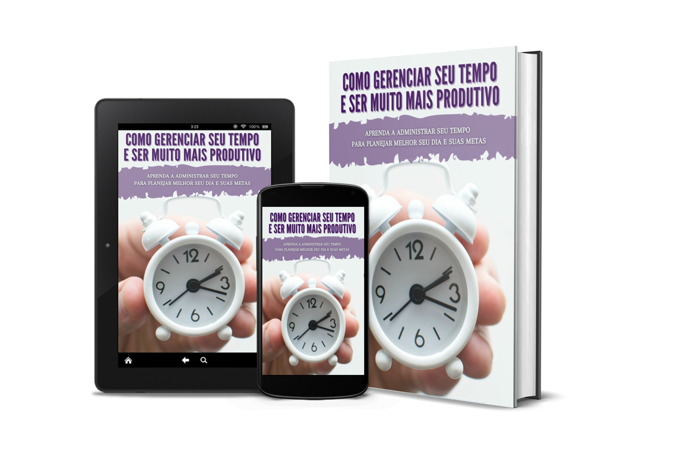

Gerenciamento de Tempo - Ebook Exclusivo
Agora que você adquiriu o ebook, está a caminho de transformar sua produtividade! Baixe o produto abaixo e comece sua jornada para organizar melhor seu tempo e alcançar seus objetivos de forma mais eficiente.
O que você vai encontrar no ebook:
- 📘 Capítulo 1: Gerenciamento de tempo - Definição de metas
- 📘 Capítulo 2: Dicas de gerenciamento de tempo para trabalhadores domiciliares
- 📘 Capítulo 3: O Método Posec de Gerenciamento de Tempo
- 📘 Capítulo 4: A importância de delegar tarefas
- 📘 Capítulo 5: Ferramentas Simples para Gerenciamento de Tempo
- 📘 Capítulo 6: Aumente sua produtividade com hábitos diários
- 📘 Capítulo 7: Maneiras de aumentar drasticamente a produtividade
- 📘 Capítulo 8: Faça menos e realize mais
- 📘 Capítulo 9: Táticas de gerenciamento de tempo para empreendedores ocupados
- 📘 Capítulo 10: Erros de Marketing na Internet e Gerenciamento de Tempo